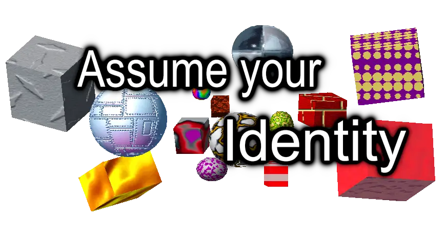
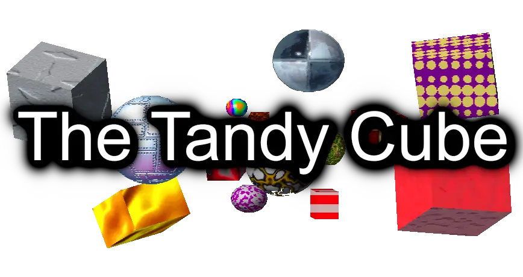
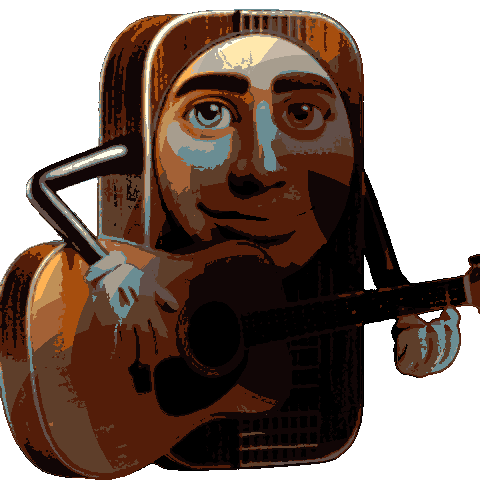
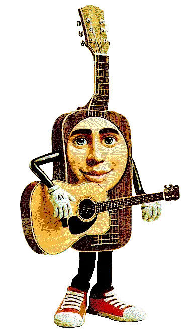

Select Your Orb Color:
Join Websocket

LIVE
Katarina Mazur
A Dance Performance
Enter
Loading transmissions...
LIVE
00:00:00
Cut on a Can dance – Kat Mazur
📱 Mobile Camera
📹 Camera Presets
1 - Front Center
2 - Front Right
3 - Front Left
4 - Side Right
5 - Side Left
6 - Back Right
7 - Back Left
8 - Back Center
9 - High Angle
0 - Low Angle
G
- Log Position

Instant Message - Blueby
Blueby:
Welcome to the Tandy Cube!
Use
WASD
to move around
Space/Shift
for up/down
Press
C
to cycle camera modes
Press
P
for presets,
G
to log position
Press
/
to open chat
Got it!

Send
Press / to open chat